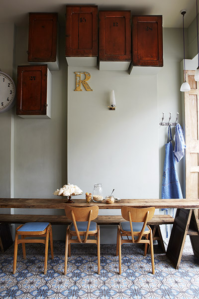
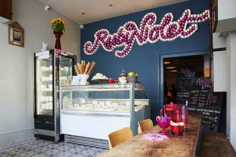

Ice Creams & Sorbets hand made in Tufnell Park, London’s Victorian Dairy.
Local, fresh ingredients churned with 100% organic milk.
118 Fortess Road, London NW5 2HL | 020 7609 0444
Closed ALL of January | Re-open 1 Feb 11:00-19:00
We are based on the borders of Tufnell Park and Kentish Town, a little jewel in the heart of Fortess Road, from where we serve our delicious ice cream and sorbet.
We take time to create our flavours, for example the toasted coconut is made by cracking then peeling the coconuts, grating, toasting then soaking in the milk and cream for 2 days, straining then churning.
All the dairy ice cream is made in small batches, using seasonal fruit prepared daily on the premises. In the summer the mint, rhubarb, apples and honey are all sourced from within a few miles. Blackberries and damsons come from Julie's home village of Flintham in Nottinghamshire.
Julie decided right at the beginning to only use organic milk, free range eggs, British or fair trade sugar. We use no artificial preservatives and all our tubs are biodegradable and compostable, and we recycle our spoons.
The ice creams all contain egg yolk.
The sorbets contain no dairy.
All the sorbets and ice creams may contain traces of nuts, as we use the same equipment and although it is cleaned thoroughly between each batch we cannot guarantee a completely nut free product.
We’re always open to suggestions for new flavours and are very willing to experiment, so please contact us with any ideas.
We serve a selection of drinks:
Newby teas, Ozone coffee, Belgian hot chocolate, Affogato.
Milk shakes made with Duchy Originals milk and 2 scoops of our ice cream.
Elderflower Presse.
Freshly squeezed juice.
A variety of sundaes with hot or cold sauces.
Freshly made cake.
We are open every day from 11am until 10pm.
Our parlour is available for private functions outside our normal opening hours.
At Ruby Violet we're happy to keep it local, make it by hand and talk to our customers.

